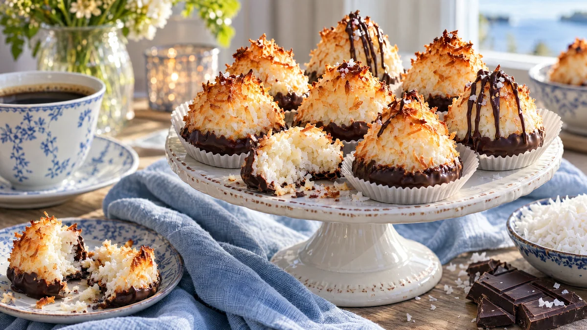

RESTFEST · RECEPTFika & bakning · Godis & konfekt
Kokostoppar på överblivna äggvitor, doppade i choklad
De överblivna äggvitorna i kylen, en påse kokosflingor och lite socker. Smeten formas till små toppar som gräddas tills spetsarna blir gyllene och krispiga, med en seg, saftig insida. Botten doppas i mörk choklad. Mormors kakburkskaka i konfektaskens finkläder.
- Förberedelse
- 15 min
- Tillagning
- 15 min + 30 min stelning
- Portioner
- ca 20 st
- Nivå
- Nybörjare
 Det här behöver du
Det här behöver du
Tryck på + vid det du behöver köpa.
Kokostoppar
Chokladdopp
Gör så här
- Sätt ugnen på 175 grader. Klä en plåt med bakplåtspapper.
- Vispa äggvitorna med salt till ett mjukt skum. Tillsätt socker och vaniljsocker lite i taget och vispa tills smeten är vit och blank, men inte stel.
- Vänd ner kokosflingorna med en slickepott, tills allt är fuktigt.
- Forma toppar med fuktade händer eller två matskedar, ca 1 msk smet per topp. Nyp till spetsen så att den blir hög och spetsig. Lägg dem på plåten med lite mellanrum.
- Grädda i mitten av ugnen i 12–15 minuter, tills spetsarna och kanterna är gyllenbruna. Låt svalna helt på plåten.
- Smält två tredjedelar av chokladen i en skål över sjudande vatten. Ta av skålen och rör ner resten av chokladen tills den har smält. Då blir chokladen blank när den stelnar.
- Doppa botten på varje topp i chokladen, låt överskottet rinna av och ställ dem på bakplåtspapper. Strö eventuellt över några flingsaltkorn på kanten. Låt stelna i 30 minuter.
Dekoration och servering
- Ringla lite av chokladen i tunna trådar över spetsarna med en sked, för en extra elegant konfekt.
- Ställ topparna i små pappersformar i en ask, eller tätt på ett fat till kaffet.
- Spara äggvitor i en burk i kylen i upp till 4 dagar, eller frys dem tills du har tillräckligt.
- Topparna håller ca 1 vecka i en lufttät burk.
Mått och ugnstemperaturer
Måtten är svenska (dl, msk, tsk, krm). Ugnstemperaturerna gäller vanlig ugn med över- och undervärme; med varmluft, sänk med 20 grader.